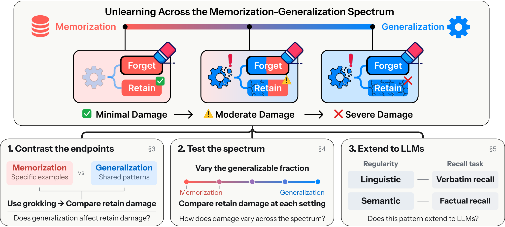

How Learning Governs Unlearning across the Memorization-Generalization Spectrum
arXiv 2026
Hwiyeong Lee*, Hyelim Lim*, Ingyu Bang, Hoki Kim, Taeuk Kim (*: equal contribution)
One-Line Summary
We show that how a model learns governs how it unlearns: the more a model relies on generalization (a shared solution mechanism) rather than memorization (sample-specific information), the greater the retain damage that unlearning inflicts. In grokked modular addition, unlearning a memorizing model leaves 59.5% retain accuracy while a generalizing model keeps only 8.1%; in our new bucketed modular addition task the trend is nearly monotonic across the spectrum (Spearman ρ between −0.9 and −1.0), and the same relationship holds for verbatim and factual recall in Hubble-8B LLMs.

Figure 1. Analysis of unlearning across the memorization–generalization spectrum. Retain damage grows with a model's reliance on generalization over memorization. The study proceeds in three steps: contrasting memorizing and generalizing models separated by grokking (§3), a fine-grained analysis across the spectrum quantified by the memorization floor (§4), and confirmation in LLM unlearning (§5).
Background & Motivation
Pre-trained networks such as LLMs absorb private information and copyrighted material that data owners may later ask to have removed. Machine unlearning aims to eliminate the knowledge learned from such a forget set while preserving performance on the retain set. In practice, however, existing methods rarely achieve this balance: forgetting usually comes with collateral loss of unrelated knowledge and skills, which the paper calls retain damage.
Neural networks fit their data through two competing strategies. Memorization stores information tied to individual training examples, while generalization learns a shared solution mechanism that applies across examples. The authors regard the two as endpoints of a memorization–generalization spectrum and ask a question that prior unlearning research has largely overlooked: does a model's position on this spectrum determine how much damage unlearning causes?
Key Hypothesis: Since unlearning attempts to reverse training, the strategy a model used to fit its data should determine how readily it later yields to unlearning. If the forget set and the retain set are solved by the same shared mechanism, suppressing the forget set must disrupt that mechanism and thereby damage retained predictions. Memorized examples, by contrast, can be removed individually with little side effect.
A practical obstacle is that a model's exact position on the spectrum cannot be directly observed. The paper therefore introduces a sequence of tractable proxies: the grokking transition in modular addition (a clean binary split), a controllable task that fixes the required amount of memorization by design, and an information-theoretic estimate of unintended memorization for real LLMs.
Analysis Framework
The study is organized as three progressively more realistic settings, followed by two practical interventions derived from the findings.
1
Binary View via Grokking in Modular Addition
Following Nanda et al. (2023), a one-layer transformer is trained on 30% of all pairs for y = (a + b) mod 113. Training passes through memorization, circuit formation, cleanup, and a fully grokked regime; four checkpoints (epochs 1,000 / 3,800 / 10,000 / 25,300) all reach 100% training accuracy but differ in strategy. A random 10% of the training set is the forget set. Random labeling (RL) and gradient difference (GD) are applied until forget accuracy first drops to chance (1/113), and retain accuracy is compared across five forget-set seeds. This is the first work to interpret unlearning through the lens of grokking.
2
Mechanistic Tracing of the Fourier Circuit
In the grokked model, generalization is realized as a Fourier circuit operating at a few key frequencies. The authors track (i) FVE, the fraction of logit variance explained by key-frequency components, and (ii) restricted loss, the test loss computed from logits reconstructed solely from those components. A gradient-filtering intervention that removes updates along key-frequency directions tests whether circuit damage causally drives retain damage.
3
Bucketed Modular Addition (BMA) and the Memorization Floor
To study intermediate positions on the spectrum, the paper introduces BMA: y(a, b) = M · ((a + b) mod p) + ua,b with pM = 256 fixed. The modular rule selects a bucket (generalizable), while the index ua,b is drawn uniformly at random per pair and fixed (must be memorized). The memorization floor, log2 M bits per example, is the minimum sample-specific information required even after the shared rule is learned. Bucket sizes M ∈ {1, 4, 16, 64, 256} span floors of 0, 2, 4, 6, 8 bits. Models are trained for 30,000 epochs; GD, RL, DPO and ME are applied with 1%, 5% or 10% forget sets, and retain damage is measured as 1 − Pr at a matched forget probability Pf = 0.1.
4
The Spectrum in LLMs: Estimating the Floor with Hubble
For language models the shared regularities are not specified by design, so the memorization floor is estimated via unintended memorization (Morris et al., 2026): the log-probability gain log2 ppert(x) − log2 pstd(x) between the Hubble perturbed model (pretrained with controlled text insertions) and the standard model (identical pretraining without them). Under an idealized bucket/member comparison this estimate recovers exactly log2 M. Experiments use Hubble-8B pretrained on 100B and 500B tokens in two settings: verbatim recall of 80 Gutenberg Popular passages (top/bottom 30% by floor form High/Low forget sets; GA, GD, NPO, CEU) and factual recall of synthetic YAGO biographies over four relations (nationality, birthplace, email, UUID) with 16-way candidate accuracy (GA, GD, NPO, DPO).
5
Practical Insights: Two Objectives and Where Probability Goes
First, the findings separate two goals often conflated under "unlearning": removing a forget set's training contribution versus suppressing the answers it induced. Retraining without the forget set is the gold standard for the former, but when the memorization floor is small the retrained model can re-derive the targeted answers from the shared rule. Second, the probability mass removed from a targeted answer must go somewhere; the paper compares RL with replacement targets drawn from the full answer space versus restricted to the correct bucket and extends the principle to token-wise regularizers in LLM unlearning.
Experimental Results
Grokking: Retain Accuracy at Chance-Level Forget Accuracy (%)
Phase
Epoch
RL
GD
Memorization
1,000
59.5 ± 3.3
23.0 ± 6.5
Circuit formation
3,800
52.4 ± 7.3
19.3 ± 5.3
Cleanup
10,000
14.2 ± 1.5
8.7 ± 3.2
Grokked (generalized)
25,300
8.1 ± 0.7
3.3 ± 1.0
Mean ± 95% CI across five forget-set seeds. All four checkpoints have 100% training accuracy; only their learning strategy differs.
Protecting the Fourier Circuit Reduces Retain Damage (Grokked Model, RL)
Intervention
Retain acc. (%)
FVE
Restricted loss
RL
8.1 ± 0.7
0.186 ± 0.026
2.324 ± 0.183
RL + filtering (non-key frequencies)
8.2 ± 0.7
0.187 ± 0.027
2.316 ± 0.187
RL + filtering (key frequencies)
30.6 ± 4.1
0.509 ± 0.020
0.167 ± 0.167
Verbatim Recall: ID Retain Damage at P̄f = 0.1 (Hubble-8B, percentage points ↓)
Model
Forget set
GA
GD
NPO
CEU
Hubble-8B-100B
High floor
45.5 ± 3.8
17.3 ± 2.3
45.0 ± 3.8
54.2 ± 6.5
Low floor
54.0 ± 3.2
17.9 ± 1.8
52.8 ± 3.3
74.0 ± 5.1
Hubble-8B-500B
High floor
14.8 ± 2.1
0.2 ± 0.6
13.4 ± 2.1
44.1 ± 6.1
Low floor
26.4 ± 2.9
3.6 ± 1.1
25.2 ± 2.9
63.1 ± 4.2
High / Low forget sets are the top / bottom 30% of 80 Gutenberg Popular passages by estimated memorization floor (e.g., 1136 vs. 881 bits for Hubble-8B-100B). GD's retain term is anchored on the ID group itself, so its ID entries are a cheating baseline.
Factual Recall: Memorization Floor and In-Relation Retain Damage (Hubble-8B-100B)
Relation
Mem. floor (bits)
In-relation damage (pp)
Out-relation damage (pp)
Email
0.93 ± 0.64
45.7 ± 40.8
3.0 ± 1.1
Nationality
1.61 ± 0.44
40.7 ± 16.3
3.2 ± 0.7
Birthplace
4.30 ± 2.05
16.4 ± 13.1
1.6 ± 0.6
UUID
5.00 ± 0.62
13.6 ± 2.3
0.9 ± 1.1
Damage is the accuracy decrease at 10% forget accuracy, averaged over GA, GD, NPO and DPO. Email addresses follow name-based formats (e.g., Maurice Clauss → clauss@gmail.com) and are largely predictable; UUIDs are random and must be memorized.
Generalizing models pay far more for forgetting: At chance-level forget accuracy, the memorizing checkpoint retains 59.5% (RL) / 23.0% (GD) accuracy versus only 8.1% / 3.3% for the grokked model, with circuit-formation and cleanup checkpoints falling in between.
Unlearning breaks the shared circuit: In the grokked model, RL unlearning drops FVE from 0.97 to 0.33 and raises restricted loss from near zero to 2.44, while in the memorizing model both stay flat. Filtering gradients along key Fourier directions lifts retain accuracy from 8.1% to 30.6%, showing circuit damage causally contributes to retain damage.
The trend is nearly monotonic across the spectrum: In BMA, retain damage 1 − Pr at Pf = 0.1 decreases as the memorization floor rises from 0 to 8 bits; Spearman correlations are −0.9 or −1.0 for every method (GD, RL, DPO, ME) and every forget fraction (1%, 5%, 10%).
Linguistic regularities govern verbatim recall: Passages with rarer vocabulary (higher TF-IDF) have higher estimated floors, and unlearning the High-floor set causes less ID damage than the Low-floor set for every method on both Hubble-8B models (e.g., GA on 500B: 14.8 vs. 26.4 pp). Damage is also greater on in-distribution than out-of-distribution passages.
Semantic regularities govern factual recall: Predictable attributes (email, nationality; 0.43–1.61 bits) suffer 36–46 pp in-relation damage, whereas unpredictable ones (birthplace, UUID; 2.30–5.70 bits) suffer 13–16 pp, and the in-/out-relation gap shrinks as the floor grows.
Where removed probability goes matters: Redirecting mass to rule-consistent (within-bucket) alternatives preserves 71–76% retain accuracy versus 15–28% for arbitrary targets, while keeping forget bucket accuracy near 100%.
Why It Matters
This work offers a principled explanation for a long-observed but poorly understood phenomenon: why unlearning so often damages what it is supposed to preserve. By linking retain damage to a model's reliance on generalization during learning, it reframes unlearning difficulty as a property of learning dynamics rather than of the unlearning algorithm alone. The memorization floor gives practitioners a concrete, measurable quantity, computable for real LLMs via a reference model, that predicts in advance how costly a given forget request will be.
The findings also carry two actionable lessons for method design. First, contribution removal and behavior suppression are different goals: when a shared rule explains most of an answer, even the retraining gold standard will reproduce the targeted output, so unlearning methods should state explicitly which objective they pursue. Second, unlearning objectives should favor alternatives that preserve the structure underlying generalization. Redistributing probability toward rule-consistent answers, or weighting suppression toward tokens a reference model does not already predict, dramatically reduces collateral damage. Together, these insights highlight that accounting for how a model learned is essential for making it forget safely.